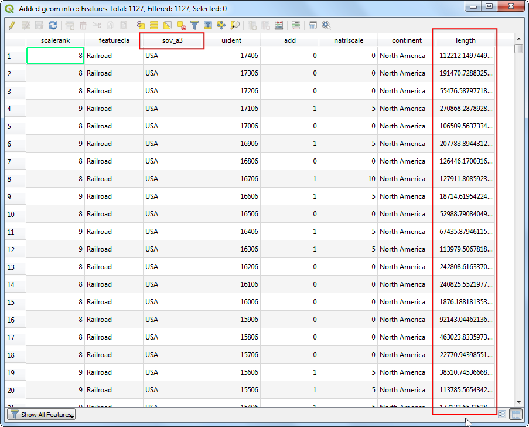
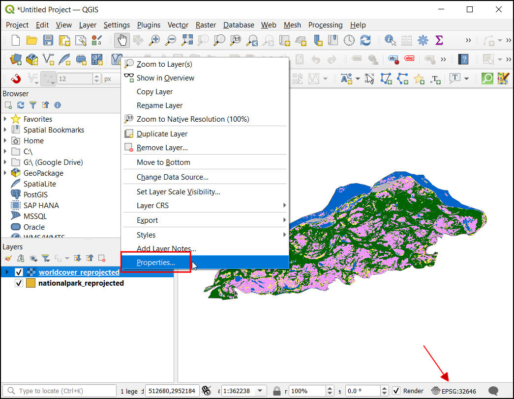
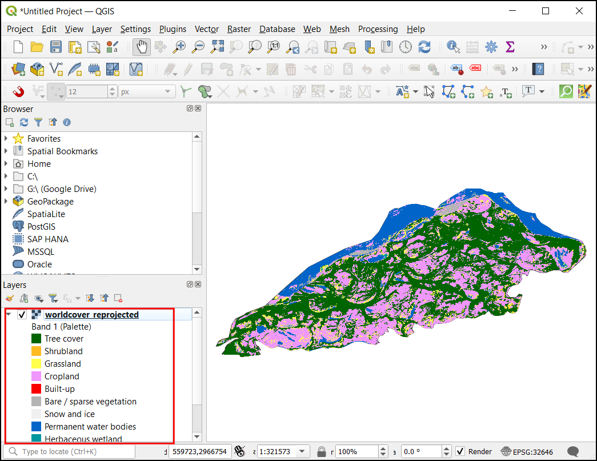
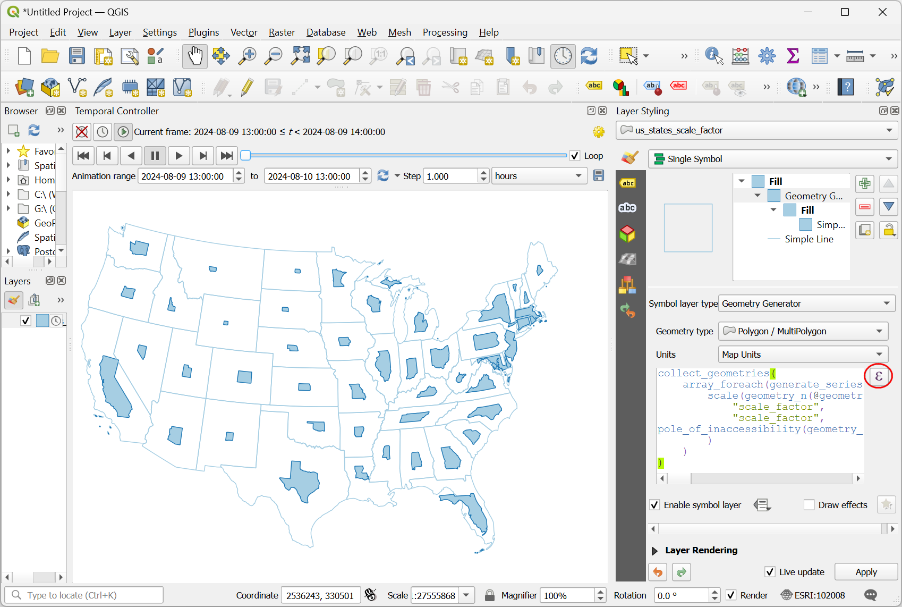

Ustvarjanje kart zgostitev (QGIS3)¶
Karte zgostitev (toplotne karte, heatmap) so eno najboljših orodij za vizualizacijo gostih točkovnih podatkov. Gre za tehniko interpolacije, ki je uporabna pri določanju gostote vhodnih elementov. Karte zgostitev se najpogosteje uporabljajo za vizualizacijo podatkov o kriminalu, prometnih nesrečah, gostoti stanovanj itd. QGIS ima upodobitveni program za tovrstne karte, ki ga je mogoče uporabiti za oblikovanje sloja točk, in algoritem obdelave Heatmap (Kernel Density Estimation), ki ga je mogoče uporabiti za ustvarjanje rastra iz sloja točk.
Pregled naloge¶
Uporabili bomo nabor podatkov o lokacijah kriminala v Surreyju v Združenem kraljestvu in ustvarili karto zgostitev za vizualizacijo območij z visoko gostoto kriminala.
Česa se bomo še naučili¶
Uporaba navideznih polj in pogojnih izrazov
Pridobivanje podatkov¶
data.police.uk zagotavlja podatke o kaznivih dejanjih na ravni ulic, rezultatih ter o ustavitvah in iskanju v preprosti obliki CSV. Prenesite podatke za Surrey Police in razpakirajte preneseni arhiv, da razberete datoteko CSV.
Lahko jih poberete tudi neposredno na spodnji povezavi:
Vir podatkov [POLICEUK]
Postopek¶
Najprej bomo iz OpenStreetMap naložili sloj osnovne karte in nato uvozili podatke CSV. V zavihku Browser se pomaknite navzdol in poiščite razdelek XYZ Tiles.

Razširite jo, da si ogledate plast ploščic OpenStreetMap. Povlecite in spustite jo na glavno okno. Nato bomo naložili datoteko CSV. Kliknite gumb Open Data Source Manager.

Preklopite na zavihek Delimited Text. Tu bomo uvozili podatke o kaznivih dejanjih, ki so na voljo v besedilni datoteki v obliki CSV. Kliknite gumb … poleg Naziv datoteke in poiščite preneseno datoteko
2019-02-surrey-street.csv. Polji X in Y v razdelku Geometry Definition, ki se samodejno napolnita s stolpcemaLongitudeinLatitude. Polje Geometry CRS je treba pustiti na privzeti definicijiEPSG:4326 - WGS 84. Prepričajte se, da so podatki na plošči Sample data videti pravilno, in kliknite Add ter nato Close.

Na plošči QGIS Layers boste videli 2 plasti -
OpenStreetMapin2019-02-surrey-street. Z desno tipko miške kliknite sloj2019-02-surrey-streetin izberite Zoom to Layer.

Na osnovnem zemljevidu OpenStreetMap se prekrije sloj točk kaznivih dejanj. Podatke lahko raziskujete s povečavo in pomikom. Podatki so precej gosti, zato je težko ugotoviti, kje je velika koncentracija kaznivih dejanj. Tu vam bo prišla prav vizualizacija kart zgostitev. Izberite sloj
2019-02-surrey-streetin kliknite gumb Open the Layer Styling panel (Odpri ploščo za oblikovanje sloja).

V meniju spustnega okna kot upodabljajočo napravo izberite
Heatmap. Plošča Layer Styling panel je interaktivna in učinek vaših sprememb se lahko takoj odrazi na platnu. Sloj bo zdaj prikazan v privzetem barvnem okvirju v sivih odtenkih.

Karta zgostitev je običajno upodobljena z uporabo barvne skale od rumene do rdeče ali od bele do rdeče, pri čemer večja koncentracija točk pomeni več toplote ali gostote. Kliknite spustni meni Color ramp in izberite barvno rampo Reds`.

Nato morate izbrati Radius. Ta parameter določa krožno okolico okoli vsake točke, na katero bo ta točka vplivala. Ta vrednost bo v veliki meri odvisna od vrste vaših vhodnih podatkov. Za naše podatke predpostavimo, da bo imel kriminalni dogodek vpliv do 5 kilometrov od lokacije. Opazite, da je trenutni CRS projekta nastavljen na
EPSG: 3857v spodnjem desnem kotu. Ta CRS ima enoto meter, zato moramo kot polmer določiti5000metrov. Drugi parameter, ki je skrit v tem meniju, je Kernel shape (oblika jedra). To je funkcija, ki določa, kako naj se vpliv točke porazdeli po danem polmeru. Renderer toplotnih kart za ta izračun uporablja funkcijoQuartic. Obstajajo tudi druge vrste jeder, kot soTriangular,Uniform,TriweightinEpanechnikov, ki jih lahko določite pri uporabi drugačne metode ustvarjanja kart zgostitev, opisane v nadaljevanju tega priročnika. Za dobro razlago in navodila za izbiro pravega polmera in oblike jedra glejte to objavo.

Vizualizacija karte zgostitev je pripravljena. V spodnjem razdelku Layer Rendering lahko prilagodimo Opacity karte. Nastavite neprozornost na
60 %, da boste poleg karte zgostitev videli tudi osnovno karto.

Za mnoge vrste analiz je dovolj, če upoštevamo samo gostoto točk. Včasih pa boste morda želeli vsaki točki pripisati drugačno pomembnost. Bolj nasilen zločin bi moral imeti večji vpliv na izhodno karto zgostitev kot rop. Podobno lahko včasih točka predstavlja več opazovanj na eni lokaciji, kar je treba upoštevati pri analizi. V ta namen lahko zagotovite neobvezno številčno polje weight, ki določa vrednost za vsako točko. Dodajmo polje uteži in ga uporabimo za izboljšanje karte. Z desno tipko miške kliknite sloj
2019-02-surrey-streetin izberite Open Attribute Table.

V vhodnih podatkih boste videli besedilno polje z imenom
Crime type, ki opisuje vrsto kaznivega dejanja. To polje lahko uporabimo za kategorizacijo različnih vrst kaznivih dejanj in dodelimo večjo utež bolj nasilnim kaznivim dejanjem.

Kliknite na Open field calculator.

Zdaj bomo vnesli formulo, ki bo uporabila vrsto kaznivega dejanja in določila vrednost uteži. QGIS ima priročen način dodajanja takšnih izračunanih polj z uporabo Virtualnih polj. Navidezno polje je shranjeno v projektu QGIS in ne spreminja izvornih podatkov. Prav tako je dinamično izračunano in se lahko uporablja kjer koli v QGIS, tako kot katera koli druga vrednost atributa. Kot Output field name vnesite
weightin nastavite Output field type naWhole number (integer). V urejevalnik Expression editor vnesite naslednji izraz. Tu uporabljamo stavek CASE za dodeljevanje različnih vrednosti na podlagi različnih pogojev. Kliknite OK.
CASE WHEN "Crime type" LIKE 'Violence%' THEN 10 WHEN "Crime type" LIKE 'Criminal%' THEN 5 ELSE 1 END
Za vsako značilnost bo dodan nov atribut z ustrezno vrednostjo uteži.

Na plošči Layer Styling kliknite spustni meni za Weight points by in izberite novo dodano polje
weight.

Videli boste, da se upodabljanje karte zgostitev spremeni zaradi upoštevanja parametra uteži. Zaprite ploščo Layer Styling.
Če želite vizualizacijo karte zgostitev shraniti kot trajno rastrsko plast ali prilagoditi karto z naprednimi možnostmi, kot so različna jedra ali dinamični polmer, lahko uporabite Heatmap (Kernel Density Estimation) iz zbirke orodij za obdelavo. Zdaj bomo uporabili ta algoritem. Pojdite na .

Preden lahko ustvarimo karto zgostitev, moramo izvorne podatke ponovno projicirati v predvideni CRS. Ker ima razdalja pomembno vlogo pri izračunu karte zgostitev, uporaba geografskega CRS ni pravilna. Poiščite in najdite algoritem .

V pogovornem oknu Reproject layer kliknite gumb Select CRS za Target CRS. Poiščite in izberite CRS
EPSG:27700 OSGB 1936 / British National Grid. Ta predvideni CRS je dobra izbira za podatke v Združenem kraljestvu. Kliknite Run.

Na ploščo Layers bo dodana nova plast z imenom
Reprojected. Odkljukajte polje poleg starega sloja2019-02-surrey-street, da ga skrijete.

Poiščite in najdite algoritem .

V pogovornem oknu Heatmap (Kernel Density Estimation) bomo uporabili iste parametre kot prej. Izberite Radius kot
5000metrov in Weight from field kotweight. Nastavite Pixel size X in Pixel size Y na ``50` metrov. Naj bo vrednost Kernel shape privzeta vrednostQuartic. Kliknite Run.

Opomba
Parameter Radius from field omogoča določitev dinamičnega polmera iskanja za vsako točko. To lahko uporabite skupaj s parametrom Weight from field za natančnejši nadzor nad tem, kako se razširi vpliv vsake točke.
Ko se obdelava konča, se naloži nov rastrski sloj z imenom
OUTPUT. Privzeta vizualizacija je grda, saj uporablja izrisovalnikSingleband gray. Kliknite gumb Open the Layer Styling panel (Odpri ploščo za oblikovanje plasti).

Spremenite način upodabljanja na ``Singleband Pseudocolor´´ in izberite barvno rampo ``Reds´´. Sloj je zdaj videti kot vizualizacija karte zgostitev, ki smo jo ustvarili prej.

Opomba
Opazite, da ima plast OUTPUT na plošči Layers` legendo, plast 2019-02-surrey-street pa ne. Pogosta težava pri uporabi sloja karte zgostitev, ustvarjene z upodabljalnikom Heatmap, je pomanjkanje legende. Recimo, da želite toplotno karto uporabiti v Print Layout in dodati legendo. Rastrski sloj, ustvarjen z metodo algoritma za obdelavo kart zgostitev, to omogoča.